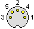

Notes on my 1200W FOG F/X constant fog fogger from Lite F/X, model 17542 (date code 04/08/28), that I purchsed from Party City in 2004. It uses a simple controller that has an LED and a button for "pulse" and "constant" fog.
My goal is to activate the fogger from other circuitry.
Facing the male connector with the pins pointing toward you, the pinout is:

When voltage appears across pins 1 and 2, the fogger is "ready".
When pins 2 and 3 are shorted, the fogger is "on".
Disclaimer: This information may be wrong. Your fogger might be very different from my fogger. Foggers use a great deal of power and can be dangerous if used improperly. Use this information at your own risk.